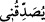

çıksaydı, halkın kulaklarında büyük bir şatahât olarak kalırdı. Sekr hâlinde olanın
kelâmıyla, insanlar çoğu defa fitneye düşerler. Bu yüzden o, sahv ve temkin makamını
talep ederek şöyle duâ etti: “Dilimden şu düğümü çöz, ki sözümü anlasınlar” (Tâhâ,
20/27-28). Çünkü Mûsâ (a.s.)’ın kelâmı, yalnızca kendisine özel bir yüz yüze gelme
(mukâfehat) ve müvâcehet denizinden (bir damla) idi. Ondan başkasının, meselâ Hârûn
(a.s.)’ın durumu böyle değildi. Çünkü onun “Kelimullah” olma mesuliyeti yoktu.
Dolayısıyla onun durumu, insanlarla beraber olup Mûsâ (a.s.)’ın hâline nisbetle daha
hafifti.
“Onu da beni doğrulayan bir yardımcı olarak benimle birlikte” Firavun ve kavmine
“gönder.”
“ (yardımcı)” kelimesi asıl olarak, tıpkı “
(ısınmak)” kelimesinde olduğu gibi
kendisinden yardım ve destek sağlanılan “yardımcı kuvvet” mânâsına gelir. Kelime
burada hâl olarak gelmesinden dolayı sıfat olarak kullanılmıştır. Ardından gelen “
(beni doğrulayan)” cümlesi de bu sıfattan bedeldir.
Yani, Hârûn’u, hakkı öz olarak ifâde etmek, huccet ve delil getirip şüphe ve tereddüdü
ortadan kaldırmak sûretiyle beni tasdik eden bir yardımcı olarak benimle birlikte
Firavun ve kavmine elçi olarak gönder. Yoksa sadece “seni tasdik ettim” veya insanlara
“onu tasdik edin” diyen bir yardımcı değil. Zira “O, dil bakımından benden daha güzel
konuşur” ifâdesi de bu mânâyı te’yîd eder. Çünkü fasîh olan veya olmayan bir kimse de
“seni tasdik ettim” ve benzeri sözler söyleyebilir. Nitekim Zekeriyyâ Ensârî, Fethü’r-
rahman bi-keşfi mâ yeltebisu fi’l-Kur’ân adlı eserinde bu görüşe yer vermiştir.
“Zira bana yalancılık ithamında bulunmalarından endişe ediyorum.” Yâni ben,
beni yalanlayacaklarından, sözümü reddedip dâvetimi kabul etmeyeceklerinden
korkuyor ve endişe duyuyorum; dilim de münakaşada kolayca yatışıp bana yardımcı
olmuyor.”
Burada Nemrud ve Firavun makamında olan nefsin özelliğinin, hakkı söyleyeni tekzib
etmek; Hârun makamında olan aklın husûsiyetinin ise hakkı söyleyeni tasdik etmek
olduğuna işâret vardır.
35. Allah buyurdu: Seni kardeşinle destekleyeceğiz ve size öyle bir kudret
vereceğiz ki, âyetlerimiz (mucize yardımlarımız) sayesinde onlar size
erişemiyecekler. Siz ve size tâbi olanlar üstün geleceksiniz.
“Allah buyurdu: Seni kardeşinle destekleyeceğiz…”